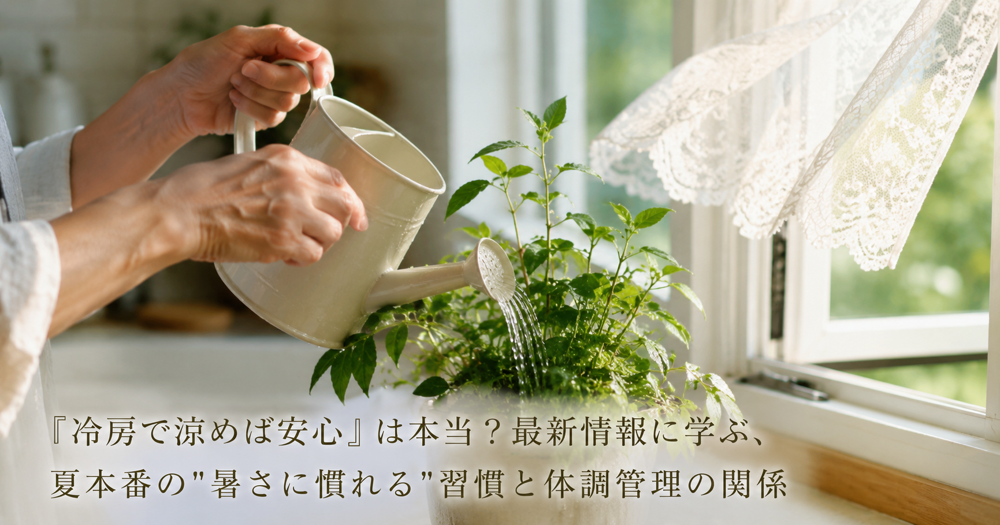

「冷房で涼めば安心」は本当？最新情報に学ぶ、夏本番の"暑さに慣れる"習慣と体調管理の関係
連日の猛暑で、冷房のきいた室内で過ごす時間が長くなっているという方も多いのではないでしょうか。厚生労働省や気象庁でも呼びかけられている「暑熱順化（体を暑さに慣らすこと）」をテーマに、ある温熱施設が地域向けの啓発キャンペーンを行い、話題になりました。今回はこの取り組みをきっかけに、中高年の方にも役立つ夏の体調管理のヒントをご紹介します。

「冷やすだけ」では見落としがちなこと
- 冷房の効いた室内で過ごす時間が長いと、汗をかく機会そのものが減り、体が暑さに慣れにくくなると説明されている。汗をかいて体温を調整する機能は、使わないと働きにくくなる可能性があるとされています。
- 高齢者や体力に不安のある方にとって、運動によって暑さに慣らす方法は負担が大きいという課題があると指摘されている。そこで、無理なく体を温める習慣を取り入れる工夫が紹介されています。
- 冷房による冷えが、かえって体調を崩す一因になる場合があると説明されている。「冷やすだけ」ではなく、緩やかに体を温める時間を持つことも、夏の体調管理の選択肢のひとつだと紹介されています。
中高年の私たちが日常で意識したいこと
この取り組みが伝えているのは、冷房を使うこと自体を否定するものではなく、冷やす工夫と、体を暑さに慣らす工夫の両方をバランスよく取り入れることの大切さという視点です。次のような一般的に知られている習慣が、夏の体調管理の手がかりになるかもしれません。
- 冷房の設定温度を下げすぎず、外気との差を大きくしすぎないよう意識する
- 涼しい時間帯を選んで、軽いウォーキングなど無理のない範囲で体を動かす
- 湯船にゆっくり浸かるなど、汗をかく機会を日常の中に少しずつ取り入れる
※上記は一般的な生活習慣としてよく紹介される内容であり、特定の症状の改善や熱中症の予防を保証するものではありません。体調に不安のある方は、無理をせず医療機関にご相談ください。
本記事は、株式会社竹屋陶板浴が2026年6月19日に発表したプレスリリース「『冷やすだけ』で大丈夫？ 猛暑時代に向け、龍ケ崎の温熱施設が"暑熱順化"啓発キャンペーンを開始」の内容を要約・紹介したものです。詳しい内容は出典元をご確認ください。
出典：株式会社竹屋陶板浴 プレスリリース（アットプレス配信、2026年6月19日）
出典：株式会社竹屋陶板浴 プレスリリース（アットプレス配信、2026年6月19日）
本記事は健康に関する一般的な情報提供を目的としたものであり、医学的な診断・治療・予防を目的としたものではありません。記載内容は出典元の見解の要約であり、当社（株式会社BISII）独自の見解や、当社が販売する製品の効果を示すものではありません。気になる症状がある場合は、医療機関へご相談ください。
当社では、日々のコンディショニングをサポートする空間電位ケア機器「DENBA Health」をご紹介しています。
DENBA Healthについて見る最終更新日：2026年7月14日